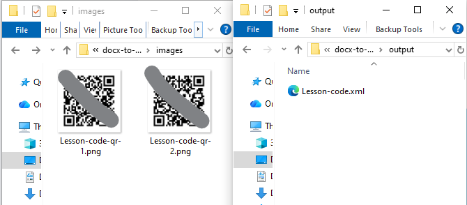
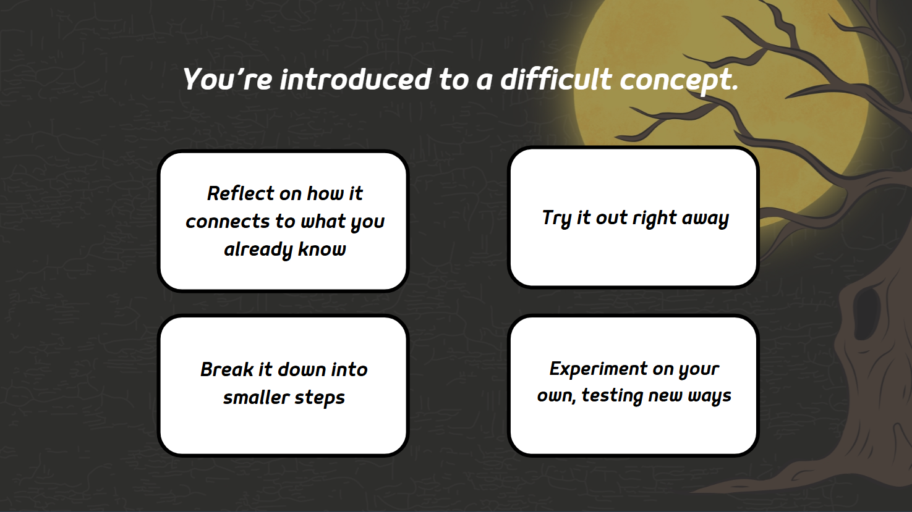
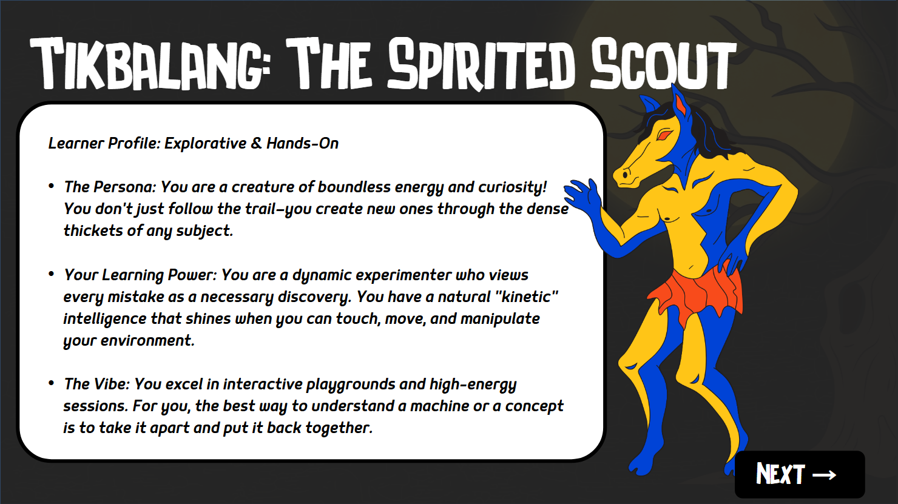

Case study · In use by my team
Worktext Studio
A browser tool that lets my team check and review worktext pages before they become PDFs.
- JavaScript
- Apps Script
- Google Sheets
Work
Tools, games and learning platforms. Start with the three case studies, then explore the rest.
Case study · In use by my team
A browser tool that lets my team check and review worktext pages before they become PDFs.
Short write-up · Python
A Python script that turns a whole folder of Word lessons into XML in one go, and makes QR codes from any links it finds.
Why
Lessons have to become XML before they can be laid out in InDesign, and lessons with web links need QR codes for the printed page.
How it works
Put the Word files in a folder and run one command. The XML files appear in an output folder. Each link becomes a QR code picture, named after its lesson (like S2-U1-C3-L007-qr-1.png), so the InDesign script can place it automatically.



Case study · Storyline
A pixel-style training game: serve six pet customers the right flavor, letter by letter.
Read the case study
Case study · Phaser
A bubble-popping game: find the 15 verbs among 30 floating words.
Read the case studyShort write-up · Storyline
A 12-question test that matches your learning style to one of four Philippine mythical creatures.
How it works
Each question describes a situation with four ways to respond. Each type of answer belongs to one creature, and the result reveals your match. A bonus button downloads a guide to more creatures.
How I built it
Variables count how many answers of each type you pick. At the end, triggers show the creature with the highest count.


The bonus guide was made from a Canva template.
Short write-up · Moodle
A full Moodle course built around Bloom's Taxonomy.
How it works
The course moves from an introduction and learning goals, to lessons, to a drag-and-drop activity, to a quiz. Moodle tracks each learner's progress until the course is complete.
How I built it
I built the drag-and-drop activity in Storyline, with feedback, unlimited tries and a restart option, then added it to Moodle as a SCORM package.


The Moodle trial has ended, so this course is shown with screenshots.
Short write-up · Storyline + JavaScript
A pretend learning platform that sends a learner's results to an outside service automatically.
How it works
The learner types their name, answers a question and clicks Submit. My code then sends their name, score and completion to a test service.
My code
var player = GetPlayer();
// Get the Storyline variables
var name = player.GetVar("UserName");
var score = player.GetVar("Score");
var complete = player.GetVar("CourseComplete");
// Test address (placeholder)
var webhookURL = "https://webhook.site/your-test-id";
// Send the data
var xhr = new XMLHttpRequest();
xhr.open("POST", webhookURL, true);
xhr.send(JSON.stringify({
user_name: name,
score: score,
completed: complete
}));Runs when the learner clicks Submit: it reads three answers from Storyline and sends them to the test address.
What arrived
{
"user_name": "Loran",
"score": 1,
"completed": true
}